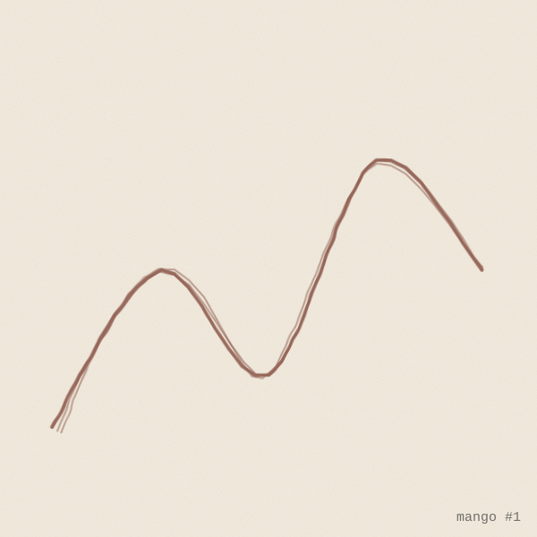

birb's café receipt
time
coffee1.50
crêpe (pages read)4.00
bag strip (thin)0.25
noticeboard look0.00
petshop visit2.00
roost time1.00
strips carried0.50
total9.25
margin_note: fog thick today
bright
time spent cafe: 0.00
